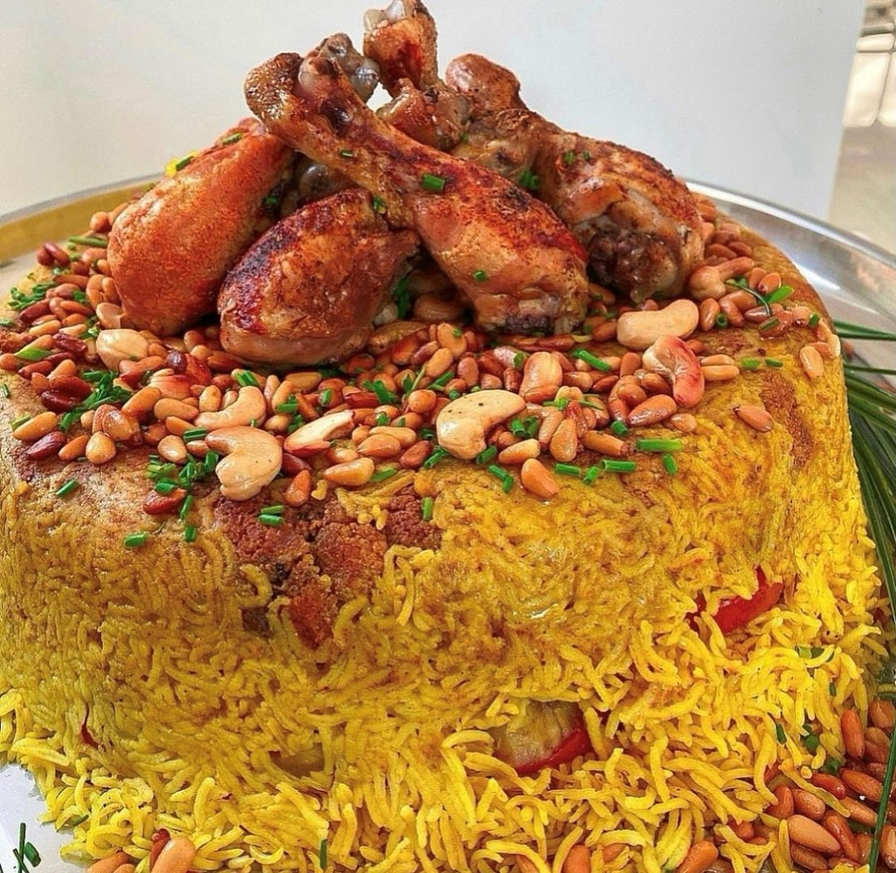

Maqloba's Recipe

This page will contain the recipe of the Palestinian maqlopa,
if you are looking for other recipes you could return to the Home Page.
Maqloba is one of the most popular dishes in Palestine and it's one of the most delicious ones.
It features layered rice, spiced chicken or lamb, and fried vegetables like eggplant and cauliflower.
Cooked together and flipped upside-down before serving, it creates an impressive, savory cake-like tower topped with toasted nuts.
Maqloba's ingredients:
- Rice, It's preferred to not be short pieces
- Chicken or meat
- Vermicelli noodles
- Potatos
- Carrots
- Eggplant
- Cauliflower
- Garlic
- Spices: The 7 Bharat spices, turmeric, cumin, allspice, salt, black pepper, bay leaves, and cardomom
Steps:
- You soak the rice with water
- You clean the meat or chicken and then you add to it the bay leaves and the cardomom
- Fry the vegetables, the potatos, eggplant, cauliflower, carrots, and the vermicelli noodles
- After the rice is ready and well soaked, you add the spices to it
- Now you get a pot, and you the meat or chicken with the vegetables at the buttom of the pot
- You mix the rice with the noodles
- Finally you add the rice with the noodles in the pot on top of the vegetables and meat
- Now you cook but the pot on the cooktop and you turn on medium temperature until the reice and the meat are well coocked
- After the meal is ready, you get a rounded tray and you but it on top of the pot and you flip upside down. Be careful don't let fall
- Now that it's flipped you could take the pot off, put the food in plates and start eating